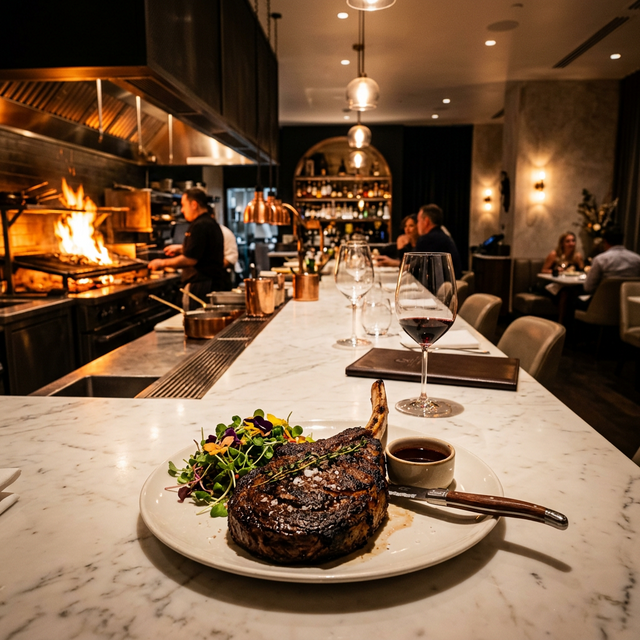
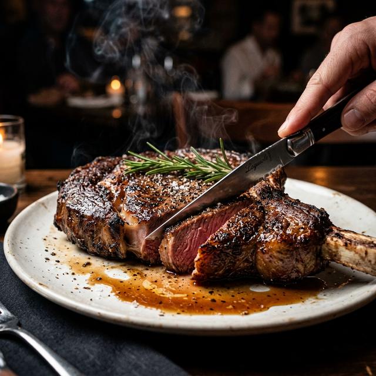
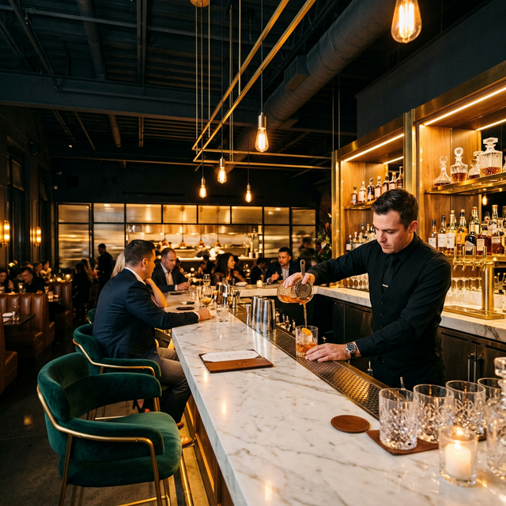
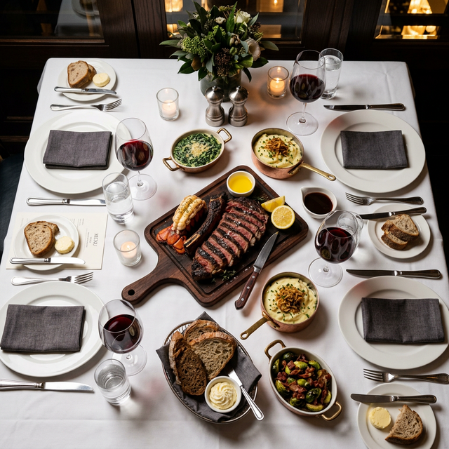

A two-day cinematic brand content production — capturing the culinary craft, the atmosphere, and the luxury of a modern steakhouse through editorial film and photography.
Every frame should feel like a spread from a luxury culinary magazine — not a Yelp photo gallery. We capture the steam, the sizzle, the pour, and the moment a guest knows they're somewhere special.




Each piece is built for a different platform and purpose — but together they form a complete content ecosystem that elevates your brand for months.
2–3 min · Cinematic
The hero. A cinematic journey through LUCCA — from first sear to final pour. Voiceover, music, slow-motion culinary sequences. Built for website hero, social, and investor decks.
Use: Website, social, pitch decks
15–60 sec × 12 · Vertical
Short-form content for Instagram Reels, TikTok, and Stories. Sizzle shots, cocktail pours, plating sequences, and atmosphere. Each one is scroll-stopping.
Use: Instagram, TikTok, Stories
40–60 Images · Editorial
High-resolution editorial food photography, interior shots, team portraits, and detail captures. Color-graded, retouched, and organized by category. Ready for print and web.
Use: Menu, website, press kit, Uber Eats
LUCCA's content should feel alive — you should hear the sizzle, smell the rosemary, want to reach into the screen. We're making food cinema, not menu photos.
Warm, appetizing, modern. Golden highlights with clean whites and rich shadows. The grade should make every dish look irresistible and every space feel like a destination.
Rich and warm, never cold or blue. Deep espresso blacks with subtle amber undertones. Shadows should feel like the corner of a candlelit dining room.
Protected and appetizing. Reds stay rich (steak), greens stay vibrant (herbs), and golden-brown crust pops. Never desaturate food. Ever.
Clean ivory roll-off on marble and white plates. Warm golden halation on candle flames and pendant lights. Never blue or clinical.
Use the venue's own lighting as a feature. Pendant glow, kitchen flame spill, window light. Support it, don't fight it. Mixed temps = atmosphere.
Every shot has a purpose in the final edit. We capture with the story in mind — wide for scale, medium for process, macro for texture.
The heart of the production
The atmosphere and experience
Professional cinema and macro equipment for food, atmosphere, and portrait work. Every lens chosen for a specific purpose.
Full-frame cinema body for kitchen sequences and dining room atmosphere. S-Log3 for maximum post flexibility.
Low-light champion for candlelit dining room, bar ambiance, and handheld energy.
61MP full-frame for editorial food photography and high-resolution interior captures.
Portable lighting designed to enhance without overpowering the venue's natural ambiance.
Day one for food, kitchen, and interior content. Day two for service, atmosphere, and team portraits. Structured for zero interruption to operations.
All tiers include professional cinema equipment, editorial food photography, and organized raw footage. The question is how deep we go.